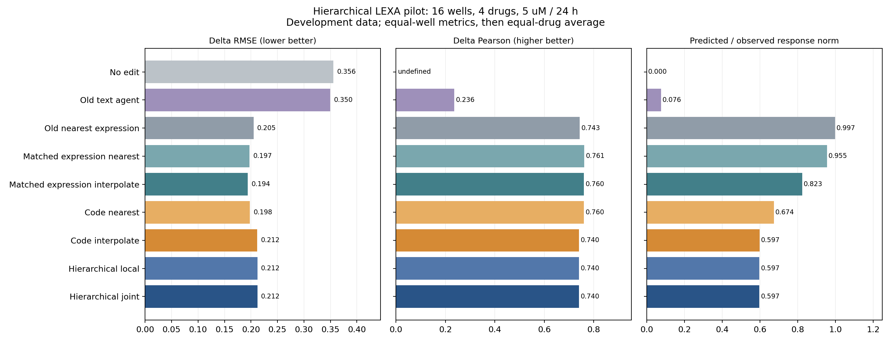

已揭盲5µM开发验证：A549，4种药物，固定24小时，16个匹配孔、786个处理细胞、2000个训练选择基因。逐孔计算指标，药内孔等权，再四药等权。
冻结原codec，训练响应检索→轴功能与状态文字卡→32轴候选选择→一次全局联合修正。候选仅限训练剂量响应及其比例缩放；轴功能为DeepSeek暂定解释，未做正式GO富集。模型未微调。
新版相对旧agent的ΔRMSE降低39.36%，但比纯code插值高0.033%，比直接表达插值高9.21%。当前提升不能归因于语言推理。
16组×32轴共512次局部选择，510次保留interpolate、2次选择half；两次均为BMS的axis11。其余14组与纯code插值的表达预测完全一致。联合复核在全部16组均未改变候选、占用分布或最终基因变化。
本轮固定成功运行84次真实API请求：4次轴标注、64次局部选择、16次联合复核，全部首次校验通过；前一版本另有8次标注请求后因基因引用格式失败而停止，未运行药物预测。两次运行的源码、请求和失败记录均保留。
独立审计核对全部输入、64份数值预测、实际API返回选择以及176行逐孔评分通过。21项针对测试通过；标注格式修复后6项相关测试再次通过。正式泛化结论仍需新的未触碰测试集。

| delta_rmse | delta_pearson | top100_delta_rmse | top100_direction_accuracy | top100_abs_delta_overlap | response_l2_ratio | |
|---|---|---|---|---|---|---|
| method | ||||||
| code_interpolate | 0.211953 | 0.740438 | 0.455105 | 0.971250 | 0.535000 | 0.596985 |
| code_nearest | 0.198008 | 0.759806 | 0.410113 | 0.970625 | 0.556875 | 0.673668 |
| expression_interpolate | 0.194145 | 0.760182 | 0.330836 | 0.976250 | 0.586250 | 0.823284 |
| expression_nearest | 0.197424 | 0.761393 | 0.302300 | 0.975625 | 0.581875 | 0.955013 |
| hierarchical_joint | 0.212023 | 0.740271 | 0.455171 | 0.971250 | 0.535000 | 0.596862 |
| hierarchical_local | 0.212023 | 0.740271 | 0.455171 | 0.971250 | 0.535000 | 0.596862 |
| no_edit | 0.355724 | NaN | 0.963622 | 0.000000 | 0.000000 | 0.000000 |
| old_agent | 0.349634 | 0.235515 | 0.931558 | 0.675000 | 0.218750 | 0.075782 |
| old_nearest_training_dose | 0.204749 | 0.743072 | 0.318611 | 0.966875 | 0.576250 | 0.997215 |
| old_one_shot | 0.349729 | 0.264661 | 0.934438 | 0.675625 | 0.218125 | 0.066215 |
| old_training_mean | 0.331189 | 0.381049 | 0.809668 | 0.810000 | 0.279375 | 0.459683 |
先对4孔占用等权平均再统计；不代表同一细胞的前后转移或显著性。
| method | code_interpolate | code_nearest | hierarchical_joint | hierarchical_local | observed |
|---|---|---|---|---|---|
| drug | |||||
| BMS | 32 | 32 | 32 | 32 | 31 |
| Dex | 28 | 28 | 28 | 28 | 29 |
| Nutlin | 31 | 31 | 31 | 31 | 31 |
| SAHA | 32 | 32 | 32 | 32 | 32 |
新表达与code检索对照使用相同>=20细胞训练孔库；旧nearest用非空训练孔，单独展示。local与joint共享局部预测，但joint多一次模型调用，不能将差异单独归因为反馈机制。代码层容量扩大、检索加入和分层解释共同变化，不能把相对旧版的提升全部归因于语言。真实测试已被查看，当前结果不能作为新泛化证据。
轨迹、所有API尝试、输入来源、预测封存、逐孔/逐药物指标均在同目录保存。code边际可精确计算加法解码器的群体均值，不唯一确定真实细胞联合分布。